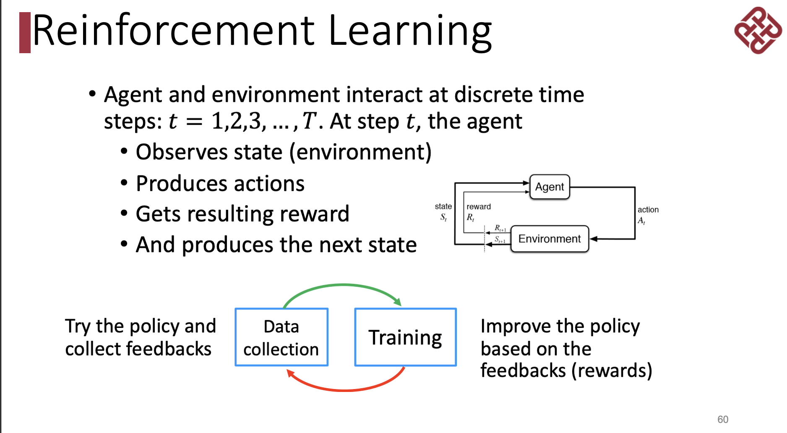
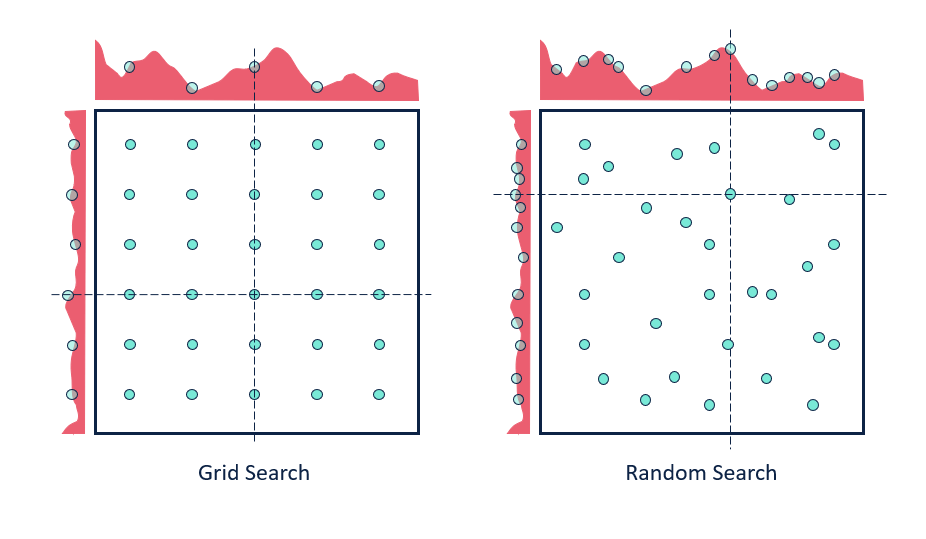
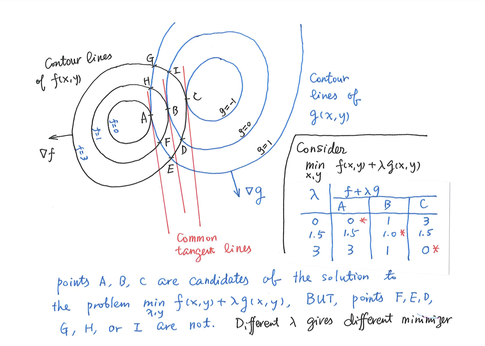
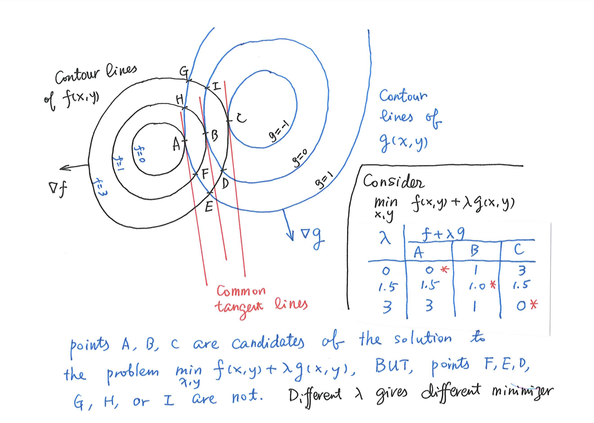

Artificial Intelligence, AI¶
data_drived的这个概念
世界瞬息万变，如何使AI具有人脑的智能从而处理千变万化的问题，定死一个定义和写死一个程序永远不是 best。我们需要数据驱动。ML和DL正是同出这一脉 。
AI is intelligence exhibited by machines, rather than humans or other animals (natural intelligence, NI).

the differences between traditional ML & DL?

diff |
Traditional M |
DL |
|---|---|---|
feature |
feature engineering |
feature learning |
domain-specific knowledge |
more |
less |
model capacity |
low |
high |
Terminology¶
records 记录 = instance 实例 = sample 样本 = feature vector 特征向量 = example 样例(严格：有了 label 的 sample)
- attribute 属性 = feature 特征
- attribute value 属性值attribute space 属性空间 = sample space 样本空间（维数 dimension
- label 标签 prediction 预测
label space 标签空间
training：training sample - training set
testing：testing sample
- ground truth 真实 learner 学习器 hypotheis 假设
学习器从真实中学习假设
version space 版本空间：同时多个符合训练集的假设。
- inductive bias 归纳偏好。算法在学习过程中对某种类型假设的偏好。学习算法自身在一个可能很庞大的假设空间中对假设进行选择的启发式或”价值观“
- 偏好 复杂 | 简单 奥卡姆剃刀 Occam‘s razor偏好 某个特征，权重设置
Task¶
- Classification 分类 。binary, multi-class
Decision Tree, Naive Bayes, k-Nearest Neighbor (KNN), Support Vector Machines (SVM), Logistic Regression
Regression 回归 。real-valued, multi-output, functional
Ranking 。 pointwise, pairwise, listwise
- Transcription 转录 。非结构化的数据 ➡️ 离散的文本形式。
文字识别, 语音识别
Machine Translation 机器翻译 。A语言符号 序列 ➡️ B 语言符号 序列
- 结构化输出 。输出 🟰 向量｜其它包含多个值的数据结构，并且构成输出的不同元素之间具有重要关系。
- 理论上包括转录&翻译语法分析：句子➡️语法结构树，标记树的节点为 动｜名｜副图像的像素级分割：将像素分配到特定类别。：标注航拍中的道路。为图片添加描述。
- 异常检测 。在一组事件或对象中筛选出，并标记 不正常｜非典型 的个体。
信用卡欺诈检测
- 合成｜采样 。生成一些和训练数据相似的新样本。希望输出的结果是更加自然和真实。
- 视频游戏自动生成大型物体或风景的纹理语音合成【结构化输出】
缺失值填补 。给定一个新样本，填补样本中缺失的元素。
去噪 。输入 🟰 经过未知损坏过程后的 损坏样本 ；输出 🟰 干净样本
密度估计｜概率质量函数估计 。。。。。
ML¶
分类¶
Supervised learning 。learning with labels｜targets.
生成模型 & 判别模型 Supervised learning
- 生成模型 学习得到 联合概率分布 然后求条件概率分布。以 统计学 & bayes 为理论基础。
朴素贝叶斯，混合高斯模型，隐马尔可夫模型
- 判别模型 学习得到 条件概率分布
SVM，决策树。LR，。
Unsupervised learning 。learning without labels.
clustering 聚类
representation
self-supervised
generative models/AIGC
监督学习 & 无监督学习 界限是模糊的。
因为没有客观的判断来区分监督者提供的值 是 feature｜target。通俗地说，无监督学习的大多数尝试是指从不需要人为注释的样本的分布中抽取信息。
无监督学习 可被分解成 n 个监督学习问题。有监督学习 用无监督学习的法子先学习联合分布。

control
pricing
games
Big data is a collection of data sets so large and complex that it becomes difficult to process using on- hand database management tools or traditional data processing applications.

Assumption¶
独立同分布 independent & identically :math:`(i.i.d.) ` 。假设样本空间中全体样本服从一个未知 “分布 distribution” ，现有的每个 sample 都是独立地从这个分布上采样得到的。

{kind=link}
identifiability of model 模型的可识别性¶
Statistical Modelling and Identifiability of Parameters
参数的 可识别性 identifiability 使我们能够获得该参数值的精确估计值。在没有可识别性的情况下，即使有无限次观测，我们也无法估计参数θ的真实值。
X～N(a+b, σ) is not identifiableX～N(μ, σ) is identifiable每个不同的 μ 都指向一个不同的期望，指向不同的正态分布，同样地每一个拥有不同期望的正态分布都能唯一求出一个 μ。但是对不同的 a 和 b 来说，a+b 也许是相同的，意味着一个正态分布并不能唯一推断出 (a, b, σ)的值。（e.g. (1, 1, σ) = (0, 2, σ)
DNN¶
why it is difficult for neural networks to be deep before 2010s.
No enough computation resources,
No enough training data,
Gradient vanish problem and no advanced optimization techniques
condition¶
Product Rule, Chain Rule and Bayes’ Rule?
❓Suppose 1 in 1000 persons has a certain disease. We have two test methods:1️⃣ detect the disease (produce positive results) in 99% of the diseased persons and in 5% of the healthy persons (false alarm).2️⃣ : detect the disease (produce positive results) in 90% of the diseased persons and in 1% of the healthy persons (false alarm). Which test method is better? Give the reason.💡 D:={Diseased person}; H={Healthy Persons}, +I ={Persons with positive results with Test method I}, +II ={Persons with positive results with Test method II }We compute the probability of a diseased person that can be detect by Test method I or Test method II, repectively, which is|It means if a person has the disease, it has more chance of being detected by Test Method II. So Test method II is better.
search¶
A search algorithm is admissible if it is guaranteed to find a minimal path to a solution whenever such a path exists.
informed search method”
Hill-climbing search; A* algorithm; Best-first.
Best-first search¶
Best-first search is neither complete nor optimal ✅

step |
open |
closed |
notes |
|---|---|---|---|
1 |
[S70] |
[ ] |
S=0+70 |
2 |
[A80, B85] |
[S70] |
A=45+35 < B=55+30 |
3 |
[B85, C100] |
[A80, S70] |
B85 < B_A=45+30+30 B85 < C= 45+25+30 |
4 |
[G100, C100] |
[B85, A85, S70] |
G=55+45 =C100 |
5 |
[] |
[G100, C100, B85, A85, S70] |
Goal reached. Stop. |
Solution path : S-B-G
Best-first A *algorithm
Algorithm A* is a special best-first search algorithm ✔️
example1
heuristic estimation |? | $h^*(n)$ actual n$\rightarrow$goal G|
+===+==============================+===+========================================+ |S | 70 | < | 55 +45 | +—+——————————+—+—————————————-+ |A | 35 | < | 25 + 35 | +—+——————————+—+—————————————-+ |B | 30 | < | 45 | +—+——————————+—+—————————————-+ |C | 30 | < | 35 | +—+——————————+—+—————————————-+ |G | 0 | = | 0 | +—+——————————+—+—————————————-+
All h(n)<=h*(n),so it is an A* algorithm and it is admissible. The path S-B-G is the shortest path.
BNN, Bayesian Belief networkd¶
A Bayesian Belief Net consists of a graph and some local conditional probabilities.
notes
{kind=link}
Breadth-firth search¶
If the search space contains very deep branches without solution, breadth-first search will be a better choice than depth-first search. T”
breadth-first search
storage cost
branch factor
storage cost bytes/node
search speed nodes/second
goal depth
notes
time complxity
branch factor
goal depth
离散¶
Why in some cases we need to use First Order Logic (FOL) rather than Propositional Logic (PL)?”
Propositional logic (PL) is too “coarse” to easily describe properties of objects.
First order logic (FOL) is to extend the expressiveness of PL.
notes
&
Compute the loss of eight-puzzle

1
2
3
4
5
6
7
8
State1
❌ 1
❌ 1
✅
❌ 1
❌ 1
❌ 2
State2
❌ 1
❌ 1
✅
❌ 2
State1
5
6
State2
3
4
Tiles out of place
Sum of distances out of places
meaning
wrong
steps to true
State1
5
6
State2
3
4
kmeans¶
Manhattan distance is <u>usually</u> larger than Euclidean distance. ✔️
当存在三角形形状，斜边比直角边加和要小
parameter tuning¶
Guess¶
{kind=link}
Grid Search¶
specify a list of possible hyperparameter values 需要人为设定超参数的范围
Grid Search will train models with every possible combination of the provided hyperparameter values and assess the performance of each trained model using a specified metric (e.g., the accuracy of predictions on a test data set). Grid Search 就会用设定区间内的**各种组合**进行训练并根据人为指定的metric进行assess
Limitation：
事先很难知道最优是在哪里，所以是否找到最优很依赖人为选择的范围，并且只是进行范围内的compare，并不确定是否全局最小
容易loss control，如果是2个hyper-parameter，每个有3个备选都要训练 个model
Random Search¶
Loop: 1. Random guess 2. Check and compare 3. Update.
provide statistical distributions of hyperparameter values 人为设定超参数的分布
Random Search randomly samples hyperparameter values from the defined distributions and then tests them by generating a model. Random Search 就会在设定分布内**随机sample**进行训练并根据人为指定的metric进行assess
Advantage：
随机搜索有效地搜索了比网格搜索更大的配置空间。因为是随机取样
找到这些显性超参数的最佳值将比获得所有超参数的最佳组合更有性价比
重要的超参数因数据集而异。网格搜索就会很难具体制定某一个
tuning parameter work¶
 

{kind=link}